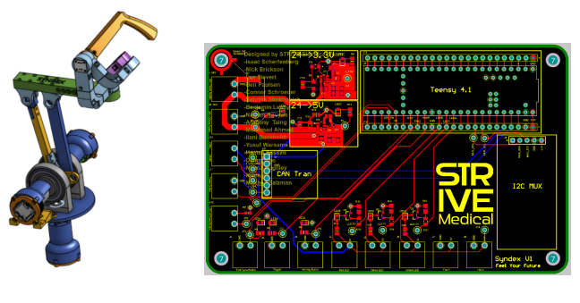

i.STRIVE Medical, University of Minnesota
SynDex
Robotic surgical simulation system
Led firmware development for a desktop-connected robotic surgical training arm: a Teensy 4.1 reading joint encoders over I2C, driving ODrive motor controllers over CAN, and streaming a custom USB packet format to a Unity simulation.
Learn more →